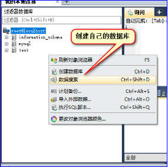
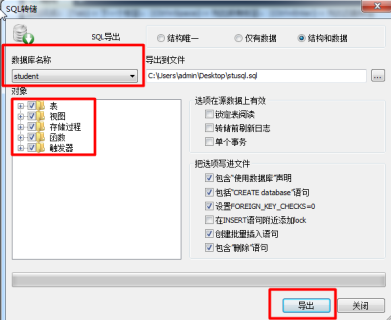

原文连接:https://www.cnblogs.com/rope/p/10696993.html
一、数据库基础
1.1什么是数据库？
什么是数据库？
答：就是一个很大的一个文件，只不过这个文件可以通过一些‘命令’操作数据；
增、删、改、查数据；
数据库等于持久数据和数据操作的一个统称。
数据库是按照数据结构来组织、存储及管理数据的仓库。
数据库有哪些？ MySQL、SQL server、Oracle 都是关系型数据管理系统（RDBMS）。
SQL存储数据相对较小，最为常用的数据库就是MySQL（开源、免费）
Orecal大型数据库（不开源、收钱）
NOSQL
Mongodb
操作数据库也有自己的语言，这个语言叫结构化查询语言。结构化查询语言(Structured Query Language)简称SQL。用于存取数据以及查询、更新和管理关系数据库系统；同时也是数据库脚本文件的扩展名。
1.2 MySQL 的操作
因为安装了PHPnow。所以每一个同学的计算机中都有数据库。
想操作数据库可以通过php操作，也可以通过可视化的数据库管理软件操作。
我们用的可视化的数据库管理软件是Sqlyog。
SQLyog 是一个快速而简洁的图形化管理MYSQL数据库的工具，它能够在任何地点有效地管理你的数据库，由业界著名的Webyog公司出品。
数据库的结构层次组成：数据库 > 表 > 字段（条目），每个数据库的表中必须有一个主键。
|
|
1、连接数据库，输入用户名和密码 用户的密码就是你安装PHPNOW的时候，也安装mySQL，密码123456 |
|
|
2、认识sqlYog的图形界面 |
|

|
3、建立自己的数据库 |
|
|
4、创建数据库名字和设置字符集 |
|
|
5、点击数据库的“+”，你会发现数据库当中有表，在数据库中创建表。 |
|
|
6、需要设置表名字（gz0920）；设置字符集（UTF8） 其余的设置都为默认 |
|
|
给（gz0920）表添加字段； 注意：①int代表的是整数 varchar字符串 ②一个表当中主键只能有一个非空自增 |
|
|
数据库表的字段 |
1.3 SQL语言操作数据库
数据库增删改查操作（CRUD）
C 增加（create）
R 查找（read）
U 更改（update）
D 删除（delete）
sql可以通过后台语言（PHP、JSP、aps.net）执行操作数据库。SQL 语句对大小写不敏感
sql语句手册：http://www.w3school.com.cn/sql/sql_and_or.asp
●查询
|
SELECT 字段 FROM 表名 |
|
SELECT * FROM banji0922 |
|
SELECT * FROM banji0922 WHERE sex="男" |
|
SELECT * FROM banji0922 WHERE xingbie = "男" AND nianling > 60 ; |
|
SELECT * FROM banji0922 WHERE xingbie = "男" ORDER BY nianling DESC; |
DESC是降序；ASC 是升序
|
SELECT 字段 FROM 表名 SELECT xingming FROM gz1125 |
提示：查询与语句SELECT * FROM gz1125 单词一般都是大写，后面添加的是表名称，因为表中才有数据。
●增加
INSERT INTO语句插入条目：
|
INSERT INTO 表名称 VALUES (值1, 值2,....) |
我们也可以指定所要插入数据的列：
|
INSERT INTO table_name (列1, 列2,...) VALUES (值1, 值2,....) |
|
INSERT INTO banji0922 VALUE(11,"王安石",99,"男","6543432534"); |
不想插入所有的条目，必须罗列响应的字段：
|
INSERT INTO banji0922 (xingming,qqhao) VALUE ("李大钊","3465342"); |
下面的是错误演示：
|
INSERT INTO banji0922 VALUE ("李大钊","3465342"); |
●更改
语法：
SET 表示设置
WHERE 表示条件
|
UPDATE 表名称 SET 列名称 = 新值 WHERE 列名称 = 某值 |
更改多个条目，用逗号隔开：
|
UPDATE 表名称 SET 列名称 = 新值,列名称 = 新值 WHERE 列名称 = 某值 |
|
UPDATE banji0922 SET nianling = 200 WHERE xingming = "李大钊"; |
|
UPDATE banji0922 SET xingbie = "男" WHERE nianling > 20; |
●删除
|
DELETE FROM 表名称 WHERE 列名称 = 值 DELETE FROM banji0922 WHERE xingming = "李大钊"; |
删除整个表：
|
DELETE FROM banji0922; |
●WHERE条件
●备份数据库

恢复数据：将我们生产的sql文件拖拽到数据库中，点击执行多条sql语句按钮，再刷新数据库列表。
|
SELECT * FROM banji0922 SELECT * FROM banji0922 WHERE xingbie = "女" INSERT INTO banji0922 ( xingming,nianling)VALUE ("王羲之",300) UPDATE banji0922 SET nianling = 30 WHERE xingming = "王羲之" DELETE FROM banji0922 WHERE xingming = "王羲之"; |
二、PHP操作数据库
概述：对于后台而已，经常做的一件事情就是保存数据，操作数据库，PHP属于后端语言，因此也有操作数据库的方法。
<?php
// 连接数据库 参数 ： 地址 、 用户名 、 密码
mysql_connect("localhost","root",123456);
// 选择操作哪个数据库
mysql_select_db("student");
// 设置编码
mysql_query("SET NAMES UTF8");
// 写执行的sql语句，快捷键 ctrl+k+u
$sql = "INSERT INTO banji0922 VALUE (13,'海子',20,'男','123465454')";
// 执行sql语句
mysql_query($sql);
?>
要从数据库中所有的条目显示到页面上：
<meta charset="UTF-8" />
<?php
// 连接数据库 参数 ： 地址 、 用户名 、 密码
mysql_connect("localhost","root",123456);
// 选择哪个数据库
mysql_select_db("student");
// 识别中文字符
mysql_query("SET NAMES UTF8");
// 写执行的sql语句
// 快捷键 ctrl+k+u
$sql = "SELECT * FROM banji0922";
// 执行sql
$result = mysql_query($sql);
// 把$result类数组对象变成数组
$row = mysql_fetch_array($result);
// 输出
print_r($row);
?>Array ( [0] => 1 [id] => 1 [1] => 诸葛亮 [xingming] => 诸葛亮 [2] => 80 [nianling] => 80 [3] => 男 [xingbie] => 男 [4] => 23456789 [qqhao] => 23456789 )
print_r后只显示数据库中第一条信息。
查询数据库：
<?php
//连接数据库，参数：数据库地址、用户名、密码
mysql_connect("localhost","root",123456);
//选择要操作的数据库
mysql_select_db("student");
//设置编码
mysql_query("SET NAMES UTF8");
//写执行的sql语句，保存数据
$sql = "SELECT * FROM banji0922";
//执行sql语句
$result = mysql_query($sql);
$arr = array(); //空数组
//循环把$resultl类数组对象变为数组
while($row = mysql_fetch_array($result)) {
array_push($arr,$row);
};
$result = array("result"=>$arr);
//变为JSON形式
$resultJson= json_encode($result);
echo $resultJson;
?>

<?php
mysql_connect("localhost","root",123456);
mysql_select_db("student");
mysql_query("SET NAMES UTF8");
//数据库返回的数据(对象)
$result = mysql_query("SELECT * FROM gz0920");
//将结果转换为数组
while ($array = mysql_fetch_array($result)) {
print_r($array["xingming"]);
echo "<br/>";
}
?>提示：
①数据库返回的结果是一个对象，因此需要用mysql_fetch_array($result)变为数组；
②遍历数据取到你想要的数据
三、复习
概述：对于客户端而言，当在地址栏输入网址回车的时候，会向服务器发起一个上行请求（GET、POST），网页中几乎90%都是GET请求，登录、注册...可以用POST，它两者不同的地址：
l GET请求是以伪装URL的形式（?k=v&k=v）向服务器传递一些额外数据；
l POST请求是以报文体的形式向服务器传递数据
报文：报文头（客户端的浏览器的信息）+ 报文体（一般为空）
get：一般用于信息的获取使用url传递参数。对所送的数据有字节数限制。（本质上：以少换多）。Get请求是向服务器获取消息。
post：一般用于存储或修改服务器上的额资源的。对所发送的数据没有字节限制。Post请求所有都是通过form表单形式提交的。Post请求可以看成向服务器推送消息。（信息量大，换回来的少）
一个完整的URL包括哪些部分：
http://www.baidu.com:8080/news/2017-12-09/index.php?newsid=344532&pagenum=12#name
l http:// 协议部分
l www.baidu.com 域名
l :8080 端口
l /news/2017-12-09/ 虚拟目录，从域名的第一个“/”到最后一个“/”
l index.php 文件名
l ?newsid=344532&pagenum=12 参数部分 从？开始到“#”之前结束
l #name 从#开始到最后，hash
四、Ajax开发
4.1 Ajax介绍
Ajax 即“Asynchronous Javascript And XML”（异步 JavaScript 和 XML），是指一种创建交互式网页应用的网页开发技术。
Ajax = 异步 JavaScript 和 XML（标准通用标记语言的子集）。
Ajax 是一种用于创建快速动态网页的技术。
Ajax 是一种在无需重新加载整个网页的情况下，能够更新部分网页的技术。
通过在后台与服务器进行少量数据交换，Ajax 可以使网页实现异步更新。这意味着可以在不重新加载整个网页的情况下，对网页的某部分进行更新。
传统的网页（不使用 Ajax）如果需要更新内容，必须重载整个网页页面。
到底什么是Ajax？
它不是一个技术（多门技术的集合），它可以“悄悄的”向服务器请求数据，服务器也可以“悄悄的”向客户端响应返回数据，最终实现整个页面没有重新加载，而实现页面中局部刷新数据。
2005 年初，许多事件使得 Ajax 被大众所接受。Google 在它著名的交互应用程序中使用了异步通讯，如Google、Google 地图、Google搜索应用了Ajax技术。
4.2 Ajax效果
概述：对现在的开发人员而言，“遍地”都是Ajax
例如163邮箱的注册，当你在邮箱地址文本输入框当中输入完手机号之后，客户端会向服务器“悄悄”的传递数据，服务器也会‘悄悄的’响应，给你返回数据；整体的网页没有更新的情况下，实现局部刷新数据；例如微博的点赞等......
4.3 Asynchronous和synchronous
概述：耗时间相对长一些的语句，我们称之为“异步语句”：Ajax、setInterval()、setTimeout()、animate()、Nodejs都是异步语句。异步语句耗时都比较长，所以会先执行后面同步的语句（如果先执行异步语句，程序就被阻塞了）。
经验：只要有回调函数的都是异步语句。
遇到异步语句，会先放一边，执行后面同步的语句，回头再执行自己
var f = 0;
setInterval(function(){
f++
console.log(f);
},1000)
console.log("哈哈");
同步语句一般耗时不长，依次从上往下的顺序执行
for(var i = 0; i < 10; i++){
console.log(i)
}
console.log("哈哈");4.4进程和线程
概述：什么是进程，一个应用就是一个进程。
什么是线程？线程就是进程的基本单位，也就说，进程是由多个线程组成的（主线程），JS是单线程。
4.5 jQuery的Ajax
jQuery的get请求语法：
$.get(url, [data], [callback], [type])
案例：当单击按钮的时候，将服务器中的数据显示到标签中，并且不刷新页面：
$("button").click(function(){
//发起一个GET请求
$.get("data/result.txt", function(data){
$("p").html(data)
})
});
//用定时器证明这个页面没有重新加载
var i = 0;
setInterval(function(){
i++;
$("h1").html(i)
},100)
注意：
所有的文件都必须在服务器中。
必须是http请求过来的。
请求的页面若不是通过http打开的，会报错，这个报错就是著名的跨域报错。
jQuery中的$.get，帮我们做了什么事情？
发送了http请求，请求接口中的数据。然后服务器收到http请求，开始执行http响应，txt中的内容在http的报文体中携带到浏览器中。被$.get的回调函数接收。回调函数的data就是http响应的报文体中的参数。
4.5.1 Ajax实现注册功能
注册业务：客户端会向服务器传递一些数据，服务器会保存这个数据，如果用户名已经被注册了，提示该用户名已经被注册。
注意：别忘记创建数据库
前端html：
<body>
<p>账户：<input type="text" id="user" /><b class="info"></b></p>
<p>密码：<input type="password" id="pwd" /></p>
<button>注册</button>
</body>
<script type="text/javascript" src="js/jquery-2.2.4.min.js"></script>
<script type="text/javascript">
$("button").click(function(){
$.post("php/reg.php", {
"name": $('#user').val(),
"password": $('#pwd').val()
}, function(data){
if(data == 1){
alert("注册成功");
}else{
alert("注册失败");
}
})
});
//文本框输入内容时，实时查询用户名是否存在
$("#user").on('input',function(){
$.get("php/search.php?name=" + $(this).val(), function(data){
if(data == 1){
$('.info').css('color','green').html("恭喜你可以注册");
}else{
$('.info').css('color','red').html("用户名已被注册");
}
})
})
//失去焦点隐藏info
$('#user').blur(function(){
$('.info').hide()
})
</script>
reg.php注册：
<?php
//获取前端传过来的数据
$name = $_POST["name"];
$password = $_POST["password"];
//连接数据库，参数：数据库地址、用户名、密码
mysql_connect('localhost', 'root', '123456');
//选择要操作的数据库
mysql_select_db("student");
//设置编码
mysql_query("SET NAMES utf8");
//写执行插入的SQL语句，保存到数据库的表中
$sql = "INSERT INTO stuuser (name, password) VALUES ('$name','$password')";
//执行SQL语句，会返回成功插入的结果（条数）
$result = mysql_query($sql);
if($result){
echo 1; //插入成功返回1给前端
}else{
echo 0; //插入失败返回0给前端
}
?>
search.php查询数据库：
<?php
//获取前端传过来的数据
$name = $_GET["name"];
//连接数据库，参数：数据库地址、用户名、密码
mysql_connect('localhost', 'root', '123456');
//选择要操作的数据库
mysql_select_db("student");
//设置编码
mysql_query("SET NAMES utf8");
//写执行插入的SQL语句，保存到数据库的表中
$sql = "SELECT * FROM stuuser WHERE name='$name'";
//执行SQL语句，会返回成功查询的结果
$result = mysql_query($sql);
//查询数据库条目的个数，并返回
$count = mysql_num_rows($result);
//给前端返回一个结果：能不能注册
if($count == 0){
echo 1; //如果数据库不存在，返回1给客户端验证
}else{
echo 0;
}
?>4.5.2 jQuery的get请求方法
语法：
$.get(url, [data], [callback], [type])
jQuery的get请求语法：有两种方法传递数据，但最终参数都是以query string的方式传递给服务端
示例1：
$.get("接口地址?k=v&k=v",function(data){
});
示例2：
$.get("接口地址",{k:v, k:v},function(data){
});4.5.3jQuery的post请求方法
jQuery的 post请求的语法：参数依然是以报文体的形式传递到服务器中
$.post(url, [data], [callback], [type])4.5.4 $.ajax()方法
$.ajax()方法有以下常用参数：
url： 要求为string类型的参数，（默认为当前页面地址）发送请求地址。
type：要求为string类型的参数，请求方式（get或post），默认为get。
data：要求为object或string类型的参数，发送到服务端的数据
success：请求成功的回调函数
dataType：服务器返回数据的类型，例如：xml、string、html、json等
error：请求失败后的回调函数
complete：请求成功或失败的都会执行的回调函数
五、原生JavaScript的Ajax
5.1原生Ajax发起HTTP请求
XMLHttpRequest()对象手册：
http://www.w3school.com.cn/xmldom/dom_http.asp
https://developer.mozilla.org/zh-CN/docs/Web/API/XMLHttpRequest
概述：原生Ajax要使用JavaScript的内置构造函数。
所有现代浏览器（IE7+、Firefox、Chrome、Safari、Opera）都支持XMLHttpRequest()对象。
var xhr = new XMLHttpRequest();字面上意思：即“XML”通过HTTP发送请求，这个函数的实例有能力发送异步的HTTP请求。
老版本的IE5和IE6不支持XMLHttpRequest()，要使用 ActiveXObject()对象：
var xhr = ActiveXObject("msxml2.0.XMLHTTP");var h1 = document.getElementsByTagName('h1')[0];
var btn = document.getElementsByTagName('button')[0];
btn.onclick = function(){
//进行能力检测，初始化xhr对象
if(window.XMLHttpRequest){
//高级浏览器版本的写法
var xhr = new XMLHttpRequest();
}else{
//低版本IE兼容写法
var xhr = ActiveXObject("msxml2.0.XMLHTTP");
}
//参数1：请求方式
//参数2：请求地址
//参数3：是否异步，true异步，false同步
//但是，请求没有真正的发送，仅仅只是配置了打开的发送“窗口”。
xhr.open("get", "data/result.txt", true);
//因为原生Ajax不是jQuery，jQuery中ajax有回调函数能获取数据，但原生没有回调函数
//只能监听事件（监听服务端返回的数据）
xhr.onreadystatechange = function () {
console.log(xhr)
//判断就绪状态(0~4)是否等于4，如果是HTTP响应以及完全接收
if(xhr.readyState == 4 && xhr.status == 200 || xhr.status == 304){
h1.innerHTML = xhr.responseText; //接收服务端返回的数据
}
}
//最后发送请求
xhr.send(null); //报文体：get请求伪装url地址报文体为空，如果是post请求就需要传参数
}|
属性 |
readyState(就绪状态) status(状态码) responseText（数据） |
|
方法 |
open(method,url,asyn) send() |
|
监听事件 |
onreadystatechange |
配置发送请求：
xhr.open("get","data/result.txt", true);参数1：请求方式
参数2：访问数据的接口地址
参数3：是否异步，true异步，false同步
但是，请求没有真正的发送，仅仅只是配置了打开的发送“窗口”。
此时xhr.send()方法发出请求，send的参数是请求的报文体，get请求不需要报文体，所以就是空。
post请求中有参数就在send()中传递。
JS原生Ajax没有提供回调函数，表示服务器的数据回来没有，此时需要一个监听事件，是就绪状态改变事件：
当就绪状态发生变化时触发，onreadystatechange事件：
xhr.onreadystatechange = function(){
console.log(xhr.readyState)
}
就绪状态的变化：
0：请求未初始化（还没调用opend()方法）
1：请求参数已经准备，尚未发送请求（调用open，还没调用send）
2：请求已发送，尚未接收响应，正在处理中（调用open，和send方法，通常现在可以从响应获取报文头）
3：正在解析响应内容，数据已经回来一部分（不是完整的）现在可以从响应中获取报文头和一部分报文体
4：响应内容解析完成，数据全部回来了，可以在客户端使用了
5.2处理原生Ajax兼容方法
处理兼容有两种方法：
处理兼容有两种方法：
if ...else判断
try...catchif(window.XMLHttpRequest){
//高级浏览器版本的写法
var xhr = new XMLHttpRequest();
}else{
//低版本IE兼容写法
var xhr = ActiveXObject("msxml2.0.XMLHTTP");
}当try里面的代码没有错误就执行try，try里面有错误就执行catch
try {
var xhr = new XMLHttpRequest();
}
catch(err) {
var xhr = ActiveXObject("msxml2.0.XMLHTTP");
}5.3 HTTP Status Code
参考：
http://blog.csdn.net/dufufd/article/details/53112184
http://www.runoob.com/http/http-status-codes.html
常见的状态码:
HTTP: Status 200 – 服务器成功返回网页
HTTP: Status 304 - 所请求的资源未修改，服务器返回此状态码时，不会返回任何资源
HTTP: Status 404 – 请求的网页不存在
HTTP: Status 503 – 服务不可用
HTTP: Status 1xx (临时响应)->表示临时响应并需要请求者继续执行操作的状态代码。
HTTP Status 2xx (成功)->表示成功处理了请求的状态代码;
HTTP Status 4xx (请求错误)->这些状态代码表示请求可能出错，妨碍了服务器的处理。
HTTP Status 5xx （服务器错误）->这些状态代码表示服务器在尝试处理请求时发生内部错误。这些错误可能是服务器本身的错误，而不是请求出错if(xhr.readyState == 4 && xhr.status == 200 || xhr.status == 304){
}5.4 Ajax缓存问题
概述：浏览器是有缓存机制的，你会发现访问过一些网页，再次访问的时候会快很多，因为它有一些资源被缓存到本地，它会在本次查询，如果没有才会去服务器中请求信的数据。
如何防止缓存，此时可以通过每次访问的时候带一个不同的随机参数即可：
xhr.open("get","result/info.txt?time="+Math.random(),true);
xhr.open("get","result/info.txt?time="+(new Date()-0),true);5.5 URI方法
encodeURIComponent和decodeURIComponent都是浏览器内置的方法，兼容性很好。
在电脑术语中，统一资源标识符（Uniform Resource Identifier，或URI)是一个用于标识某一互联网资源名称的字符串。
http://127.0.0.1/09-Ajax%E9%98%B2%E6%AD%A2%E7%BC%93%E5%AD%98.html概述：虽然在地址栏中你看到了汉字，但是会发现，浏览器已经帮我们进行转码，所以赋值之后就看见以上结果了，虽然浏览器已经帮我们做了这件事，我还是要讲一下转码和解码的问题，因为浏览器的底层就是用这两个方法实现转码和解码的。
将汉字转码为URI：
encodeURIComponent("习大大")
将转码的汉字解码：
decodeURIComponent("%E4%B9%A0%E5%A4%A7%E5%A4%A7")
5.6原生Ajax的POST请求-注册功能
表单数据编码格式有一个正式的MIME类型：application/x-www-form-urlencoded
当使用post请求提交这种顺序表单时，必须设置Content-type请求头为这个值模仿表单数据的提交。
<body>
<p><input type="text" id="user"><b id="info"></b></p>
<p><input type="text" id="pwd"></p>
<button id="btn">注册</button>
</body>
<script type="text/javascript">
var btn = document.getElementById('btn');
var user = document.getElementById('user');
var pwd = document.getElementById('pwd');
//实时查询是否可以注册
user.oninput = function(){
//进行能力检测，初始化xhr对象
if(window.XMLHttpRequest){
//高级浏览器版本的写法
var xhr = new XMLHttpRequest();
}else{
//低版本IE兼容写法
var xhr = ActiveXObject("msxml2.0.XMLHTTP");
}
xhr.open("get", "php/search.php?name=" + user.value, true);
//只能监听事件（监听服务端返回的数据）
xhr.onreadystatechange = function () {
//判断就绪状态(0~4)是否等于4，如果是HTTP响应以及完全接收
if(xhr.readyState == 4 && xhr.status == 200 || xhr.status == 304){
if(xhr.responseText == 1){
info.style.color = "green";
info.innerHTML = "恭喜你可以注册";
}else {
info.style.color = "red";
info.innerHTML = "用户名已被注册";
}
}
}
//最后发送请求
xhr.send(null); //报文体：get请求伪装url地址报文体为空，如果是post请求就需要传参数
}
//注册账号，保存数据库中
btn.onclick = function(){
if(window.XMLHttpRequest){
var xhr = new XMLHttpRequest();
}else{
var xhr = ActiveXObject("msxml2.0.XMLHTTP");
}
xhr.open("post", "php/reg.php", true);
xhr.setRequestHeader("Content-type","application/x-www-form-urlencoded")
//监听服务端返回的数据
xhr.onreadystatechange = function (){
if(xhr.readyState == 4 && xhr.status == 200 || xhr.status == 304){
if(xhr.responseText == 1){
alert("注册成功");
}else{
alert("注册失败");
}
}
}
//最后发送请求：get请求伪装url地址报文体为空，如果是post请求就需要传参数
xhr.send("name="+user.value +"&password="+pwd.value);
}
</script>
5.7封装QueryString函数
因为原生的Ajax发起请求需要拼接字符串，所以为了方便原生Ajax向服务器传数据，封装QueryString函数
//JSON形式的数据：
var obj = {
name: "哈哈",
password:456
}
//需要通过下面的方法拼接成get参数字符串：
function queryString(data){
var arr = []; //用数组存储k=v
for(var k in data){
arr.push(k + "=" + data[k]); //循环遍历存储到数组中
// arr.push(k + "=" + encodeURIComponent(obj[k]));
}
return arr.join("&"); //用&符号分割字符串
}
console.log(queryString(obj))封装好方法后，可以在get和post请求中直接使用JSON传参数：
GET使用方式：
xhr.open("get", "php/search.php?" + queryString({name:user.value}), true);
POST使用方式：
xhr.send(queryString({name:user.value, password:pwd.value}));注意：
原生POST请求，向服务器传递数据，不能在地址的后面拼接字符串；
需要在send()传递数据，因为send方法相当于是报文体
POST要设置请求头setRequestHeader('content-type','application/x-www-form-urlencoded')
请求头的设置只能在open函数与send函数之间,其余的地方不可以，会报错；
原生Ajax在开发中不会使用，但是面试的时候经常会问到就绪状态（0-4）